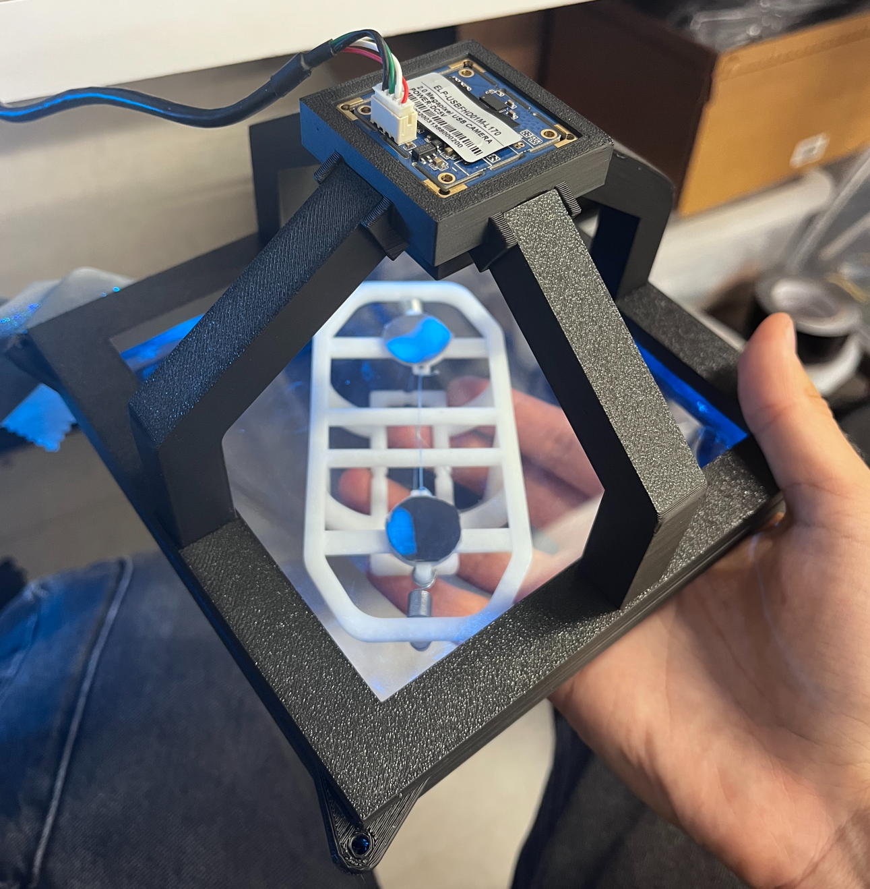
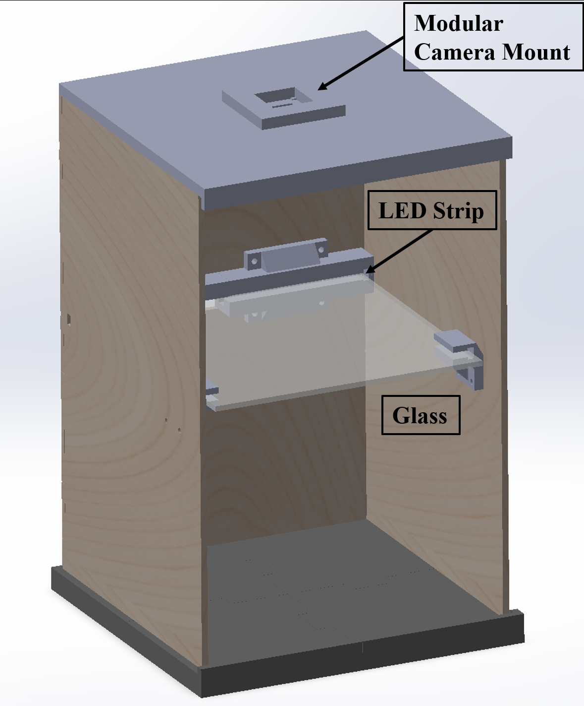
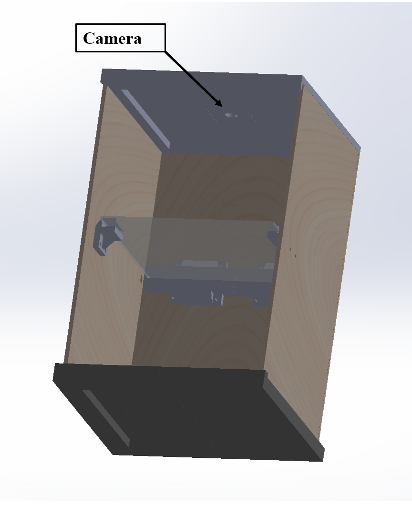
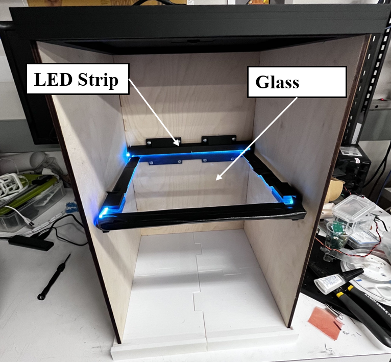
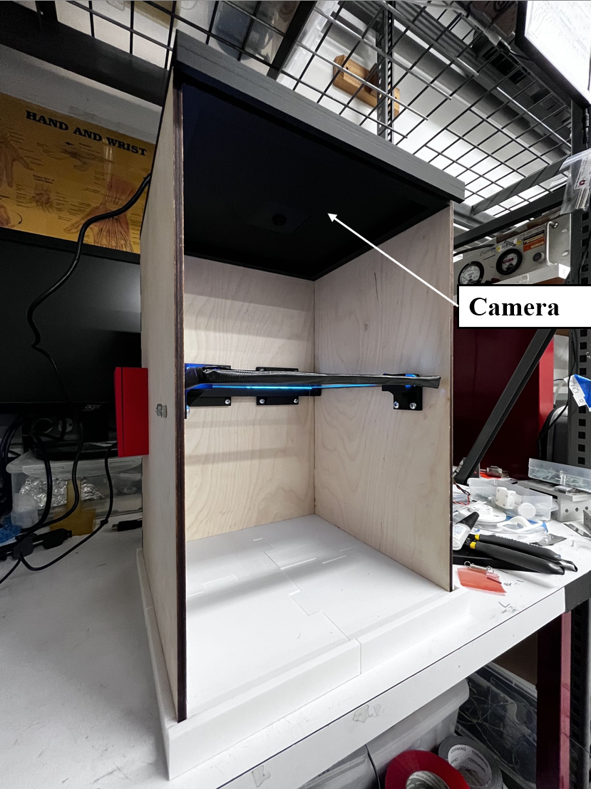
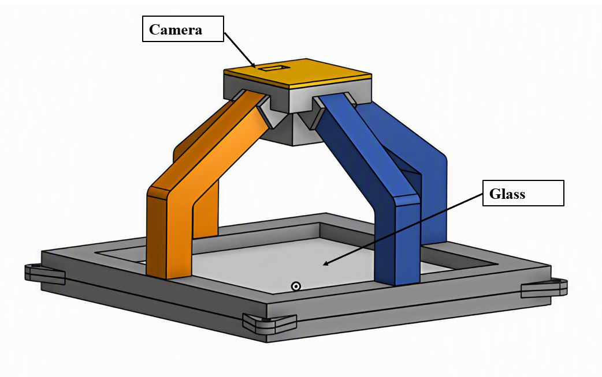
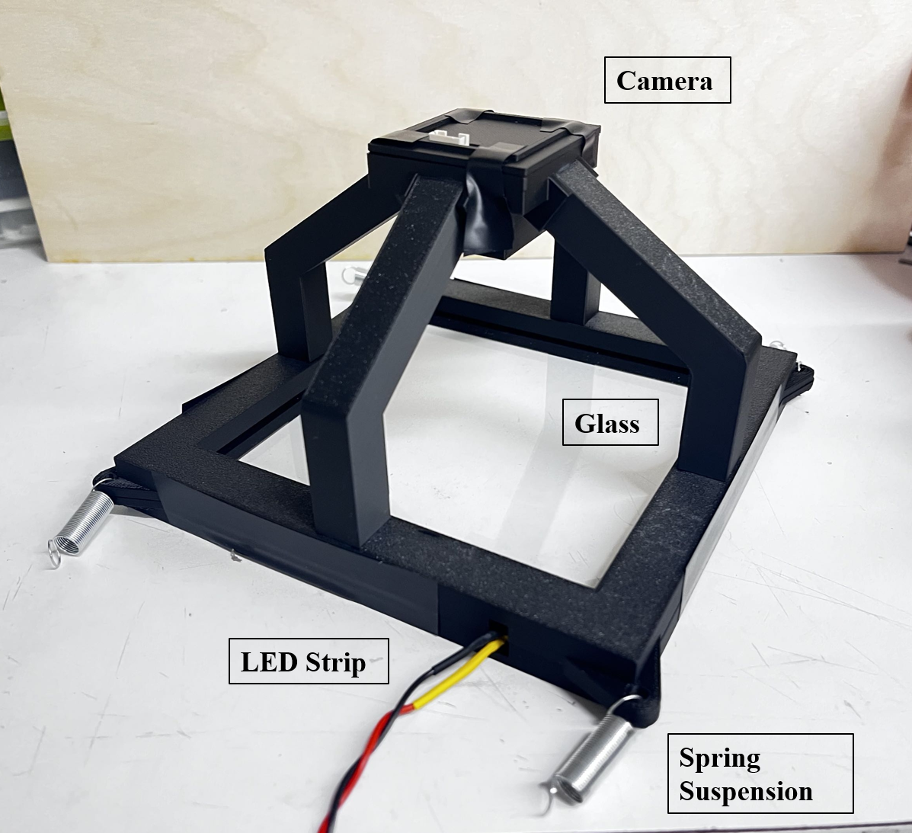

What I Built
[Write your paragraph here — an overview of the two systems, why two were needed, and how they fit into the lab's broader research goals.]
[Write your paragraph here about the 8×8 in. test bench — how it differs from the compact system, how it measures adhesive contact during engagement and failure, and how gravity-assisted loading was minimized.]




[Write your paragraph here about the compact FTIR system — the design constraints, why it needed to fit within a 2 in. working distance, and what it was built to support (NASA TechLeap proposal).]


[Write your paragraph here about the Python/OpenCV pipeline — lens distortion correction, ChArUco calibration, and how individual contact patches were measured from the images.]
[Write your paragraph here about the gripper hardware — its role in the adhesive testing setup, how it interfaces with the FTIR systems, and any design considerations behind it.]

Contact Detection
[Write your paragraph here about the contact detection results — what the visualization shows and what it revealed about adhesive performance.]